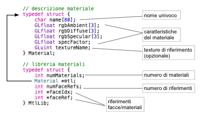

Essere in grado di rappresentare
un modello tridimensionale non solo mediante la sua descrizione
geometrica ma anche assegnando alle superfici che lo compongono delle
informazioni sul materiale di cui è fatto è un importantissimo
passo avanti per poter dare maggior realismo alla scena che si
intende rappresentare.
Tutti i modelli salvati su file utilizzati
nel progetto hanno un materiale associato e le loro descrizioni sono
salvate e caricate in accordo con il formato WaveFront Material
(.mtl)
previsto dalla stessa specifica .obj.
Tale
formato è tuttavia estremamente ricco di funzionalità anche molto
avanzate ed è stato implementato solo in minima parte, le
caratteristiche realizzate sono:
Ciascuna di queste informazioni e un nome univoco per il materiale vengono memorizzate nella struttura Material descritta in model.h e riportata nella figura sottostante. Un singolo documento .mtl viene richiamato da un file di descrizione mesh .obj e descrive al suo interno uno o più materiali Ogni materiale può essere riferito durante la descrizione topologica del formato obj mediante la frase usemtl seguita dal nome testuale del materiale. Per effetto di tale istruzione, tutte le facce descritte da quel punto in poi utilizzeranno il materiale richiesto.
Il parsing di un file .mtl è realizzato dalla funzione loadMtlLib() in model.c e risulta relativamente semplice. La procedura si occupa di inizializzare la struttura MtlLib e di scorrere il documento, istanziando e compilando delle opportune strutture Material mano a mano che vengono trovate delle definizioni di materiali. Tutte le funzionalità avanzate previste dalla specifica vengono ignorate. Se un materiale dispone di una texture associata, al campo textureName viene assegnato il riferimento opengl per la texture in oggetto, che viene opportunamente caricata attraverso la procedura bindTexture().
Al termine del parsing, la struttura MtlLib non è però pronta
per essere utilizzata: la funzione di caricamento dei modelli
(loadModelFromOBJ)
deve infatti occuparsi di compilare i campi relativi al mapping facce
/ materiali. È nel file .obj che viene infatti descritto quando
utilizzare un ben preciso materiale.
Per avere queste informazioni
a portata di mano nel momento in cui un modello viene renderizzato,
la struttura MtlLib prevede due particolari vettori di interi:
faceIdx
e faceRef.
Il primo vettore mantiene la lista degli indici delle facce a partire
dalle quali si inizia ad usare un materiale. Il secondo vettore
(dimensionato come il primo) raccoglie l'indice del materiale per
quel riferimento.
La funzione destroyModel() si preoccupa anche di liberare tutte le risorse occupate dalla libreria dei materiali associata ad un modello.
La funzione di renderizzazione renderModel() si occupa anche della resa del materiale per ogni faccia che viene disegnata.
All'inizio della procedura di rendering di un modello, se non esiste una libreria di materiali per quell'oggetto viene attivato il mapping colore-materiale (GL_COLOR_MATERIAL): in questo modo fuori dalla procedura è possibile impostare un colore mediante glColor e il modello verrà reso utilizzando un unico colore ambientale e diffusivo anche in presenza del flag GL_LIGHTING abilitato.
Se un oggetto è collegato ad una libreria di materiali, prima di disegnare una faccia si controlla se il suo indice compare nel vettore faceIdx sopra discusso. In caso affermativo si procede con uno switch tra materiali, ovvero si leggono le informazioni relative al nuovo materiale nella struttura Material (l'indice del materiale è recuperato in faceRef) e si istruisce opengl sulle sue caratteristiche attraverso delle chiamate glMaterial con gli opportuni parametri (GL_AMBIENT, GL_DIFFUSE, GL_SPECULAR, GL_SHININESS).
Se il materiale che viene applicato porta con se una texture colore, all'atto dello switch viene abilitato il flag GL_TEXTURE_2D e viene fatto il binding alla texture opportuna mediante la chiamata glBindTexture. Se un materiale invece non prevede una texture è necessario disabilitare il flag GL_TEXTURE_2D per evitare che la texture precedentemente utilizzata continui a “sporcare” le facce renderizzate di li in poi.